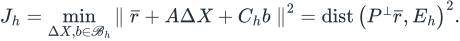
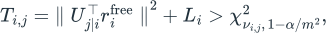

整体概括
同一份扫描，可以对应两个真的但不同的世界
单个房间相对设计 BIM 平移，和房间正确但激光惯性里程计（LIO）绝对位姿平移，可能产生完全相同的扫描与里程计输入。论文不让优化器强选一个看起来拟合最好的解释；它分别输出冲突是否被检测、哪些候选还可能成立，以及位置各方向是否可用。重点不是再做一个配准分数，而是避免把无法区分的偏差改写成建筑事实。
对照原文证据
Consider a robot that sees a single room (Fig. 1 ). In world A, the room was built 20 cm away from its position in the BIM, and the LIO pose is correct; in world B, the room matches the BIM, and the LIO pose is 20 cm off. The two worlds give the same scan and the same LIO pose, so no method can tell them apart from these data or be right in both. We call such a pair paired worlds.Each window returns the three reports separately, because the answers can overlap. Under H0, detection says whether the scan conflicts with the BIM. The cause of a detected conflict is a unique attribution when one explanation remains, an ambiguous cause together with its candidates when several remain, or all explanations excluded when none remains.误归因率更低，前提是对齐回答率
预注册二维仿真的关键对比使用 7,200 个被标为可检测但不易归因的情形。在都只给出 120 次归因、回答率 1.67% 时，方法错答一次，对照错答 38 次；按实验单元宏平均的条件误归因率为 0.83% 对 31.67%。它没有证明大部分模糊案例能答对。实验室和 SLABIM 则用已知人为注入做受控对照，结果不等同于真实施工偏差的盲测。
对照原文证据
Figure 5: Conditional error rate against answer rate on the 7,200 detectable-but-not-attributable cases of the pre-registered two-dimensional study. The line is the diS-Graphs-style baseline with uncertainty-based abstention; markers are native operating points. At the answer rate of Ours (120 of 7,200, 1.67%), Ours made one wrong attribution (0.83%) and the abstaining baseline 38 (31.67%); the paired risk difference is -30.8 percentage points (99.58% CI -44.5 to -19.3 ). Restricted to wall faults, the rates are 0.84% and 31.09%. Error rates are cell macro-averages.Evaluation under known faults. An evaluation that compares errors at a fixed answer rate in pre-registered simulation, together with paired fault injections on a laboratory room and on three floors of SLABIM, where the ground-truth fault is known because it was inserted (Sections 6 and 7 ).Research gap
匹配质量、估计协方差与故障身份是不同的问题
作者对照将 BIM 当定位地图的办法、只接收入参匹配的 LIO-BIM 门控、按局部结构一致性筛选的 BIM-Loc，以及分阶段估计的 diS-Graphs。门控可以说这次匹配不可信，协方差可以量化地图给定时的拟合不确定度，但都不必然回答偏差来自先验、墙表面还是整间房。在本文配对世界中，单一位姿解至多在其中一个世界正确。
对照原文证据
These methods answer three different questions: where the robot is, whether the match is good enough to use, and how large the deviations are once an alignment has been fixed. Each method returns one pose, and diS-Graphs also returns one set of deviations, so in the paired worlds, each can be right in at most one world. Reporting a covariance with that pose does not close the gap, because a covariance computed on the assumption that the map is correct cannot reflect an error in the map.BIM-Loc [ 54 ] addresses this with multi-hit ray casting for scan-to-BIM association and hierarchical Bayesian inference that propagates discrepancy evidence from surface pixels to whole structures. Each patch keeps an inconsistency posterior, a binary indicator lets only structure judged consistent into the pose residuals, and the estimator does not depend on a particular odometry front end.LIO-BIM [ 39 ] takes a related approach: it couples LIO to the BIM and adds a BIM factor only when scan-to-BIM matching has converged with sufficient quality. If the test fails, the estimate stays with LIO.真正有用的是约束偏移方向的新见证
本文把大地测量 DIA 的检测—辨识—适配引入跟踪中的冲突判定。曼哈顿正交墙的示意里，只有一个方向见证时，位姿移动能吞掉矛盾；两个见证可以发现矛盾，却未必找对故障；独立的第三个见证才可能锁定不一致的那个。见证是对同一个方向提供的独立约束，不是点数量；非正交或弱先验时应回到子空间与噪声检验。
对照原文证据
Faulty measurements in geodesy are handled in the detection–identification–adaptation (DIA) framework. From DIA, Teunissen gives the distribution of the resulting estimator [ 41 ] , and when hypotheses cannot be separated, Zaminpardaz and Teunissen show that the whole parameter vector cannot be adapted, while some functions of the parameters still can [ 50 ] . Therefore, a pose under several candidates is corrected only along the directions on which they agree.With one witness, the pose absorbs the offset and no conflict appears. With two witnesses, the conflict is detected, but an offset of the first wall produces the same data as an offset of the second wall together with a pose shift, so the cause cannot be attributed. With three or more witnesses, the walls that agree single out the one that does not. The count is a special case for orthogonal walls; non-orthogonal walls and the strength of the prior remain subject to the projected-subspace test.算法主线

原图由 arXiv 加载；若未显示，可打开下方原图链接。
跟着原图读
- 先追横向箭头，不把 BIM 送回里程计
左栏的相对运动与墙几何是两路输入；中栏同一房间示意在灰色墙、紫色偏移或轨迹变化中划分不同候选。底部左块只问是否有冲突，右块才问哪些解释兼容。
- 再沿右栏的颜色与保留个数读动作
蓝色无冲突使用无故障模型，但图上写明未确认正确；紫色唯一解释修位姿，BIM 变动要先核验。下一紫框的实、虚箭头区分可共同锚定与仅运动传播方向；最下红框没有解释，立即撤回位置。
这是决策流程而非数据曲线。多候选不等于完全不可导航，无冲突也不等于每个轴都有独立参考。
先保持里程计独立，再构造窗口残差
每个关键帧待估的是平面位置和偏航；高程、横滚和俯仰留给 LIO。相邻帧里程计、首帧绝对先验、关联到 BIM 墙的点到线残差分块白化；同墙普通施工公差由墙内观测共享，不能把多点都当作新的独立见证。实验室由跟踪仪给初始基准，SLABIM 则用开头关键帧对齐 BIM，并沿窗口传递基准。
对照原文证据
To begin with, we define the quantities the method works with. The state of each keyframe in a window is its planar position and yaw; height, roll, and pitch stay with the LIO. The three candidate explanations are then written as biases on a single residual, and we state the three reports the method must produce for every window, which will be detailed later.here, the associated covariance is denoted by \Sigma_{P} . The prior defines the datum, that is, the coordinates of the start. On SLABIM, these coordinates come from a BIM alignment of the opening keyframes; in the laboratory they come from a laser tracker. The datum is passed from window to window by centering the next prior on the last working pose, the pose the method is about to adopt, so that it is carried forward by the odometry and grows softer with distance. In simulation, the prior is given directly.This residual is subject to noise from two sources. Projected onto the wall normal, range noise of standard deviation \sigma_{r} along the beam contributes the variance v_{fwk} ( D ), and \sigma_{t} , the ordinary construction tolerance of that wall, is shared by every point of the wall inside the window. The covariance of the residuals of wall w isThe prior, the odometry, and the measurements of different walls are independent of one another. Whitening each block and stacking them produces the residual r(X) and the cost J(X)=\lVert r(X)\rVert^{2} . Numerical values are given in C and D .拟合互斥候选；检测与排除用不同的检验
每个窗口分别拟合无故障、各可见非固定墙、各可见房间及存在绝对先验时的 LIO 偏置；单墙只沿法向且有幅值上限，整房是平移，LIO 可另有偏航。共享同一起点用 Gauss–Newton 求解。检测问任何候选相对无故障能否足够降低代价；归因另问其他候选能否解释当前假设留下的方向，因此检测未贡献秩的假设也不应自动删除。
对照原文证据
Under the single-fault assumption, only one fault is active at a time and the explanations are fitted separately, so that measurements requiring two faults at once fit none of them; a wall marked as a fixed reference has no wall explanation of its own and does not move with its room. The hypothesis set \mathcal{H} contains one wall-surface offset for each visible wall that is not fixed, one room translation for each visible room and, when the window has an absolute prior, one LIO bias, with size m=\lvert\mathcal{H}\rvert excluding H0.Every explanation in \{\mathrm{H0}\}\cup\mathcal{H} , the null hypothesis together with all single-fault explanations, is then fitted independently by Gauss–Newton, starting from the same predicted pose and from zero bias; each retains its own pose, bias, and covariance. A joint fit would constitute a multiple-fault estimate, which the model of Section 3.3 does not support. A wall-surface offset whose unconstrained value exceeds the magnitude bound is held at the bound while the pose is refitted.where m_{+} is the number of explanations with q_{h}>0 , and \alpha is a preset significance level. An explanation with q_{h}=0 cannot raise the alarm, yet it remains a candidate in the exclusion tests; this is how a room translation inside a single room stays available to compete with the LIO bias.Exclusion checks, for every candidate, whether some competitor explains a direction that the candidate cannot. Let B_{i} be an orthonormal basis of the range of candidate i ’s Jacobian at its unconstrained fit, including its bias columns, and let U_{j|i} be an orthonormal basis of the directions that competitor j adds. Candidate i is excluded by j when多候选不是把所有坐标全部丢掉
若只剩一个候选，可依它修位姿；若是结构偏差，只生成给人检查的候选 BIM 更新，不覆盖原模型。若有多个候选，BIM 只修正都支持且一致的方向，争议方向沿 LIO 传播，输出并集区间；也可能到距离门槛后撤回坐标。若没有解释，就撤回位置，内部仍可传播一个占位状态供下一窗。新见证到来可重测，上一窗原因标签不会直接继承。
对照原文证据
Outcome Working pose BIM No conflict Fit of H0 with all walls; directions that the BIM cannot verify are marked as unverified Unchanged Unique attribution Corrected according to the attributed explanation Corrected copy proposed for verification; the original is not replaced Ambiguous Correction of the lowest-cost remaining explanation in the directions where all candidates agree; prior and odometry in the ambiguous directions Unchanged All explanations excluded Position withdrawn and reported as unavailable UnchangedA coordinate becomes unavailable in any of three separate situations. When every explanation has been excluded, as when two discrepancies are present at once, every coordinate is reported unavailable, the interval is empty, and nothing is proposed for the BIM; the prior and the odometry still propagate a pose internally as a placeholder for the next window. A coordinate is also unavailable when it is anchored neither by the BIM, along a direction common to the remaining explanations, nor by the prior and the odometry. Passing the distance limit is the third situation.Because odometry error grows with distance, a counter accumulates the distance travelled while a coordinate stays ambiguous; beyond a preset distance under the simulation noise model that coordinate is reported unavailable. The candidates and their intervals remain, so a later reference wall can still resolve the ambiguity. The boundary cases of the counter are given in Algorithm 1 .A cause does not carry over to the next window. What does carry over is the last working pose, which becomes the center of the next prior and thereby propagates the datum.关键公式
投影把“位姿能吸收什么”从“故障还剩什么”剥离
在白化后的观测空间对当前位姿线性化，沿位姿雅可比列空间的故障成分可以被位姿修正吞掉，正交补才是留在残差里的部分。即使某故障的投影可见，仍要判断实际签名是否在其他候选集合内。比较用带幅值边界的可解释集合，不是只看秩或两条方向夹角；没有这一点，就会把墙幅值限制和房间平移混为一谈。
对照原文证据
At a pose \bar{X} , linearize: residual \bar{r}=r(\bar{X}) , Jacobian A=\partial r/\partial X . Inside the range of A is where a change of pose moves the residual, so any part of a fault signature that lies in that range can be absorbed by adjusting the pose. What remains visible is the projection onto the orthogonal complement, which can be expressed aswhere \mathcal{B}_{h} is a bounded interval for a wall-surface offset and the full parameter space for a room translation or an LIO bias. For a room or the LIO, E_{h} coincides with the subspace S_{h} ; for a wall, it is a segment of the line S_{h} . The least-squares cost of explanation h is the squared distance from the projected residual to this set, namely,Detection against the null hypothesis H0 requires only a nonzero S_{h} , whereas identification against one another requires more. For a fault to be attributable, its signature must lie outside the explainable set of every other explanation, so the test examines every candidate rather than a single pair. A fault may be detectable yet still not attributable. The following four relations then arise.比较的不是哪个候选总残差最低，就把它当真
嵌套时较广的解释可以做到不高于较窄解释的最小代价；代价低不等于原因唯一。真实判别由相对无故障的检测、两两追加方向检验及截断损失共同组成。幸存候选如果对某个方向给出不同位置，后续工作位姿不沿该方向复制最低代价解。这解释了为何程序仍能沿可信方向移动，却把整间房改图的决策留到出现更多见证之后。
对照原文证据
Let h and j be two explanations with E_{h}\subseteq E_{j} in the linearized model. Then (a) J_{j}\leq J_{h} for every residual \bar{r} , so every observation that h explains is also explained by j ; (b) in the noise-free case, if P^{\perp}\bar{r}\in E_{j}\setminus E_{h} , then j explains the observation and h does not.Nesting, as established in Section 4.3 , appears in the first term: a competitor that adds no direction cannot exclude the candidate, so a broader explanation remains when a narrower one fits. The magnitude bound appears in the second term, and a wall can be excluded by its bound loss alone, even in the case m=1 where it has no competitor.where c is the remaining explanation of lowest cost. Along an ambiguous direction the position follows the prior and the odometry, so a BIM correction there waits until the cause is attributed. Along the other directions the candidates agree, so the lowest-cost explanation supplies the correction and the robot can keep moving, while the cause remains unsettled. A comparable split appears in GNSS/INS integration, where the inertial solution carries the position while a satellite measurement is suspect.墙残差协方差：区分独立量测噪声和共用公差
独立噪声进对角，同墙的施工公差进所有成对项。教学算例：一墙两点，各自独立标准差 0.03 m，共用公差标准差 0.04 m，则对角为 0.0009 加 0.0016，得 0.0025 m²；非对角为 0.0016 m²；两点平均残差的标准差约 0.045 m，并非独立假设下的约 0.035 m。
符号与实现提醒
- Σw
- Nw × Nw，单位 m²；对应窗口中同一墙的 Nw 个残差。
- vfwk
- 关键帧 f 上第 k 个关联点沿墙法向的独立距离噪声方差，单位 m²。
- σt / 1
- 普通施工公差标准差（m）与长度为 Nw 的全一向量。
实际量测噪声投影与方差地板见附录 D。先按块白化再做投影；同一墙上的点越多不代表共用偏差可以平均到零。
先投影：剔除位姿调整所能解释的方向
在白化残差空间，把故障列剔除位姿雅可比可解释的成分。教学算例：两个无量纲残差，位姿只能影响第一分量，投影算子留下第二分量；故障签名 (3, 2) 投影为 (0, 2)，而 (3, 0) 投影为零。后者在此线性模型下即使有偏差也没有独立检测证据。
符号与实现提醒
- A / A⁺
- 白化残差对状态坐标的雅可比矩阵，R × 3N；伪逆为 3N × R，其中 R 为残差维数、N 为关键帧数。
- Cₕ
- 候选 h 的故障设计矩阵，R × dh；各列按该类偏置参数单位映射到白化残差。
- P⊥ / Sₕ
- R × R 正交投影、以及投影故障列所张成的子空间。
非零投影是可检测性的几何条件，不代表已超过噪声门槛，也不保证能与其他候选区分。数值实现需审计秩公差与状态尺度。
拟合代价：读残差点离有边界的签名集合多远

先把状态可吸收部分消掉，再计算剩余残差到候选允许签名的距离平方。教学算例：投影只剩一维，残差为 3，墙假设可解释区间为 [−2, 2]，到端点距离 1，代价为 1；某平移假设若覆盖整个该方向，代价为零。反之残差是 1 时，两者代价均为零，分不出唯一故障。
符号与实现提醒
- r̄ / ΔX
- 线性化处的白化残差（R 维）及状态增量（3N 维，位置 m、偏航 rad）。
- ℬₕ / Eₕ
- 偏置允许域及其经故障设计矩阵、正交补投影得到的可解释签名集合。
- Jₕ
- 最小残差平方和，无量纲；根号量才是白化距离。
附录 A 从加号残差写成距正签名集合，使用了偏置域关于零对称。若扩展为单侧偏差，必须保留符号、检查集合是否需反向，不能直接搬用等号。
成对排除：对手是否解释了当前候选遗漏的方向

在候选自身的未截断拟合处，量出仅由竞争候选新增的方向所承载的残差能量，再加上候选触墙幅值边界的代价。教学算例：新增一维的白化残差为 2，另有边界损失 1，则统计量为 4 加 1 得 5；若此例所用临界值为 4.5 就排除，若为 6 就不排除。这两个临界值仅是示意，不是论文配置。
符号与实现提醒
- Ui,j / rᶠʳᵉᵢ
- 原式 Uⱼ|ᵢ 为竞争者添加方向的正交基；乘候选 i 的 R 维未限幅白化残差得到这些方向的投影分量。
- Lᵢ
- 持墙偏置至幅值上限带来的非负代价；其他候选无这一截断损失。
- νᵢ,ⱼ / α / m
- 自由度、预定显著性和不含无故障的候选数；墙候选再加一个自由度，临界值对有序对校正。
原式的右端不等号是判决条件，左侧统计量不等同 p 值。实际序列中非线性、幅值边界及失配使卡方近似不等于严格标定。
工作位姿：保留里程计争议分量，只补上共识方向
用最低代价幸存拟合与预测位姿的差作为候选修正，经投影器丢掉争议分量。教学算例：只看平面，预测 (1, 2) m，候选 (1.4, 2.3) m；若 x 有争议、y 一致，保留增量 (0, 0.3) m，工作位置为 (1, 2.3) m，不会沿 x 跟着 BIM 拉动。
符号与实现提醒
- Xpred / Xwork
- 窗口预测和工作状态，均为 3N 维，包含平面位置及偏航。
- X̂c
- 幸存且代价最低的候选状态。
- Pwork
- 3N × 3N 投影器，留下可由候选共同支持且一致的方向。
位置和角度符号、线性化尺度需统一，不能把示例的轴对齐投影理解为通用逐坐标硬阈值。争议方向保留里程计不等于它正确，仍需独立见证和可用性规则。
实验怎么做
主检验从正式网格里按预先固定规则截取
二维生成器给定墙身份、几何与单一注入真相，布局为走廊、转角、带门房间及带柱房间。附录预注册主网格有 49,200 次，主要比较只纳入有强或弱先验且平移幅值大于 0.05 m 的条件。对接检测或辨识功效阈值 0.8 的预判标签是在运行算法前给定的，含噪情况下标签不保证单次能或不能归因；几何上同形的签名才是原则性不可辨。
对照原文证据
The two-dimensional generator renders LiDAR scans with occlusion in four layouts: a corridor, a corner, a room with a door, and the same room with a pillar, as shown in Fig. 1 and detailed in C . Pillars and the two walls outside the door are fixed references. Faults are injected one at a time, with the ground truth known.The main grid has 123 cells (49,200 runs): fault-free runs for four layouts and three prior conditions; single-wall offsets of 0.05, 0.10, 0.20 and 0.30 m in three layouts; room translations of 0.10, 0.20 and 0.30 m in three directions; and LIO translations of the same sizes and LIO yaw errors of 1 ∘ , 3 ∘ and 5 ∘ in the two room layouts. Wall offsets of 0.05 m lie at the threshold for proposing a revision; they are reported but do not enter the main comparison.The specification of the two-dimensional study was fixed before the formal run. Please refer to C for details. The main comparison covers strong and weak priors and translations larger than 0.05 m. Rates are macro-averages over cells: each non-empty cell has the same weight, and the conditional error rate is the ratio of the averaged E/N and A/N . On the cases labeled detectable but not attributable, our method is compared with the abstaining diS-Graphs-style baseline at the same answer rate.Under the declared linear noise model, a fault is labeled undetectable when its detection power at the level of Eq. ( 10 ) is below 0.8, attributable when its power of separation from every competitor at the level of Eq. ( 11 ) is at least 0.8, and detectable but not attributable otherwise. These labels are pairwise powers rather than the joint decision of the full test, so a fault labeled detectable but not attributable can still be attributed on a given run. A conflict is permanently unattributable only when the offset direction lies in the intersection of the explainable sets.对照的回答率、宏平均与 bootstrap 必须一起看
二维条件误归因率不是所有案例的错误比例，而是单元等权的误答率除以单元等权的回答率；计数仍为非加权计数。允许 diS-Graphs 风格对照依自己协方差拒答，并在相邻阈值间随机混合，对齐回答率。12 组比较用 5,000 次分层配对 bootstrap 得各自 99.58% 区间，重抽保持重复和配对世界一起；强制答最低代价的变体用于检查保留多解的作用。
对照原文证据
The specification of the two-dimensional study was fixed before the formal run. Please refer to C for details. The main comparison covers strong and weak priors and translations larger than 0.05 m. Rates are macro-averages over cells: each non-empty cell has the same weight, and the conditional error rate is the ratio of the averaged E/N and A/N . On the cases labeled detectable but not attributable, our method is compared with the abstaining diS-Graphs-style baseline at the same answer rate.Uncertainty-based abstention scores each output by the largest standard deviation among its flagged walls and the square root of the largest eigenvalue of the covariance of each flagged room; an output without a finite, positive semidefinite marginal covariance is withheld at every finite threshold. The comparison at the answer rate of our method mixes the two neighboring thresholds at random. The mixture is part of the evaluation and is not offered as a separate method.Confidence intervals come from 5,000 paired bootstrap resamples, stratified by cell, that keep each complete repetition and each pair of worlds together. The comparisons of our method with the native and the abstaining baseline on three labels and two measures, risk and correct-attribution rate, form a family of 12; each interval has the level 1-0.05/12 (99.58%), so that the family holds at 95%.Ablations isolate parts of our method. The forced variant selects the lowest-cost candidate whenever several remain, and is otherwise identical. The trust-BIM ablation, labeled Trust BIM in Table 6 and the figures, treats every wall as correct and allows no fault, while keeping the LIO prior and the odometry. For a fair comparison, every method, including the baselines and the ablations, sees only the portion of the window that has been received so far.实录是成对注入；激光跟踪仪与地图参考不能当同一种真值
实验室 Room 209 测试只由跟踪仪提供初始位姿；SLABIM 把原始扫描配准到发布点云得到逐帧参照，楼层 1F 两段参照仍相差约 18 cm。前端在 1F 开发后冻结，3F、4F 才用于后续测试。注入前后都跑同一窗口，仅保留本文方法控制运行无冲突的窗；非靶向输出是相对于每个方法自身控制条件新增的，而不是全部历史告警。
对照原文证据
Room 209 is a laboratory room with an IFC model, and its sequences were recorded. Sequence 209_1 calibrates the noise and the transform between the laser tracker and the IFC. From a tracker pose, the test sequences 209_2 and 209_3 are processed from their first keyframe, and the tracker provides no per-frame ground truth.SLABIM [ 23 ] provides LiDAR-inertial sessions and a mesh BIM of a university building. A per-frame reference is recovered by registering each raw scan to the released map point cloud, without the BIM ( D ). The references of the two sessions on floor 1F differ by a rigid offset of about 18 cm, and the absolute accuracy is unknown.The frozen front end, which supplies initialization, associations and window priors, was developed on floor 1F and then frozen. Floors 3F and 4F were used only after that freeze, under specifications fixed before the runs. Results on 1F are development-floor results.On the real sequences, every window is run twice: once unmodified (denoted C0) and once with a single injected fault. A window enters the evaluation only when the unmodified run of our method ends with no conflict. Baselines may still raise structural flags on those windows. Scoring is performed relative to each method’s own C0: an output is counted as off-target if it is new with respect to that method’s C0 and lies outside the injected fault. For our method, this means off-target attributions; for the baselines, it means off-target structural flags.时延是冻结输入的单线程重放，不含上游
作者报告单线程无 GPU 重放的前后端合计中位时延为 SLABIM 每关键帧 35–45 ms，实验室为 88 ms；不含 FAST-LIO2、几何构建及开头对齐。候选数量随可见墙和房间增长，成对检验也是额外开销；不能把重放时延当任意建筑的端到端部署时延。数据方面 SLABIM 公开，其他支撑实验的数据和代码需向作者合理申请。
对照原文证据
All timing measurements were performed on an i9-13980HX platform using a single thread, without a GPU. The replay of the fixed inputs takes a median of 35–45 ms per keyframe for the front end and the back end together on SLABIM, and 88 ms in room 209. The slowest keyframe, 214 ms in room 209, used about one sixth of the 1.33 s available at 1.5 m/s. The replay feeds the frozen front end with the archived poses and omits FAST-LIO2, the construction of the geometry and the initialization on the first nine keyframes.Each output requires m+1 fits, one per explanation including H0, and at most m(m-1) pairwise tests. The count m grows with the number of walls and rooms in view. Each fit is a least-squares problem in the 3N pose parameters and at most three bias parameters. Although the shared tolerance \sigma_{t} makes the covariance of a wall’s residuals dense, the weighted cost remains available from per-wall, per-keyframe sums of the point coordinates and of their products. A fit does not grow with the number of scan points. Runtime is reported in Section 7.4 .The SLABIM dataset is publicly available [ 23 ] . Other data and code supporting the findings of this study are available from the corresponding author upon reasonable request.提升与证据
保留候选确实有用；强行回答会把错误带回来
图示匹配点之外，预注册可归因的 5,600 个案例里方法回答 5,574 次、零错；强制版本答得稍多，也未错。区别主要在困难案例：附录的独立恢复网格上，普通和强制版本正确且稳定的比例为 42.22% 与 42.19%，错归因却是 0.42% 与 27.58%。这是“不要强作选择”的证据；不同于比较所有候选集设计或断言最低代价的共识方向修正本身已被隔离验证。
对照原文证据
Where the fault is attributable, our method keeps answering (RQ2). On the 5,600 attributable cases it answered 5,574 times with no wrong attribution, and the forced variant answered 5,595 times, also with no error.Our method reaches a correct and stable resolution in 42.22% of the recovery runs and in 33.55% of the paired worlds. The forced variant reaches nearly the same share, but its wrong attributions are 27.58% and 20.86%, against 0.42% and 0.19% for our method. Forcing an answer therefore adds wrong attributions rather than correct ones.Recovery Ours 29.94% 27.42% 0.42% 42.22% 8.0 Forced variant 29.94% 0.28% 27.58% 42.19% 0Choosing the lowest-cost explanation along the directions where the candidates agree was not given its own experiment.等新见证的代价是带着错误继续走一段
在强先验配对演示中，门外墙出现前争议方向随里程计，房间偏移世界 RMSE 约 0.03 m，LIO 偏置世界约 0.21 m；见证出现后降到接近零。若参考晚到，10 m 距离上限先撤回位置，后续仍能重判；没有参考则不能恢复。不能把图中多试验的分位带读为置信区间，也不能把点位逐次覆盖等同整段轨迹始终覆盖。
对照原文证据
(a) Working-pose error along the ambiguous direction in the room world (a1) and the LIO world (a2): median and 10–90% range. Before the reference becomes visible, the pose follows odometry in the ambiguous direction, so the LIO world carries the prior offset (RMSE about 0.21 m, against 0.03 m in the room world); once the reference is visible, both errors fall to about zero.With the reference at 16 m, all 200 trials in each world are first withdrawn at the cap; the ambiguity is then resolved in 200 room-world and 195 LIO-world trials. Without a reference, every trial is withdrawn after 10 m.The union interval of Section 5 covers the true pose more often than the baseline’s marginal intervals. Pointwise coverage is 94.75–98.78% across the three labels, against 57.05–84.08%, as reported in Table 1 . In the demonstration below, between 6% and 32% of the trajectories leave the interval at least once, except in the LIO world with a weak prior.非靶向输出为零，但姿态仍可能跟着错图移动
实验室 168 个条件无非靶向归因、且 8 个预判可归因故障都答对；SLABIM 1,302 个条件也无非靶向归因，对照分别新增 391 和 1,070 个非靶向结构标记。它们不是完全相同的输出类型。楼层 4F 普通墙在可比较子集中注入吸收率中位数为 8.7% 对全信 BIM 的 25.6%；走廊平移则两者均吸收 99.0%，所以没有乱归因，不等于位置没被错误地图拖动。
对照原文证据
Of 168 injected conditions, 8 were predicted attributable. All 8 were attributed correctly, and the 168 conditions produced no off-target attribution, whereas the diS-Graphs-style and BIM-Loc-style baselines raised off-target structural flags in 63 and 32 conditions, as shown in Fig. 8 .Across the 1,302 injected conditions, our method proposed no BIM change outside the injected fault: it raised no off-target attribution, while the diS-Graphs-style and BIM-Loc-style baselines raised off-target structural flags on 391 and 1,070, as shown in Fig. 11 and Table 6 .Wall offsets were absorbed by a median of 8.7% on the conditions shared with the trust-BIM ablation, against 25.6% for that ablation, and LIO prior translations by 0.4%, against 100% for the diS-Graphs-style baseline.A translation along a 4F corridor is a paired world in the real building. A corridor is not a stand-in for an ordinary room, but both the working pose and the trust-BIM ablation absorb the translation by 99.0%.弃权牺牲可用性；和过度自信的后端是两回事
在原始 BIM 的开发楼层会话 1F2 和 1F3，输出可用各为 111/148 与 87/106；未注入的唯一归因不能验真。在 1F3 被撤回的局部区段，BIM-Loc 风格后端相对恢复参照的平移 RMSE 为 0.395 m，纯 FAST-LIO2 为 0.118 m，前者却报告约 0.56 mm 的逐轴标准差中位数。该对照采用明显更紧的里程计先验，不能把差距全归给地图假设或外推至正式 BIM-Loc。
对照原文证据
This comes at the cost of availability. On the original BIM of floor 1F the position was available in 111 of 148 outputs and in 87 of 106, and on the keyframes where it was withdrawn the BIM-Loc-style backend was 0.625 m and 1.252 m from the recovered reference.(a) Session 1F2 (148 outputs) and (b) session 1F3 (106 outputs), with keyframes colored by output state; unique attributions cannot be verified on the original BIM.On the segment where the position is withdrawn, the BIM-Loc-style baseline keeps localizing against the BIM, as shown in Fig. 10 . Over keyframes 9–16 of session 1F3, about 18–32 m, its translation RMSE is 0.395 m, against 0.118 m for FAST-LIO2 alone, and its error is larger on every one of the 890 frames. The median of its self-reported per-axis standard deviation on that segment is about 0.56 mm, which illustrates the same gap noted in Section 1 : a covariance computed on the assumption that the map is correct cannot reflect an error in the map.The reproduction uses an odometry prior 8–10 times tighter than measured.
原图由 arXiv 加载；若未显示，可打开下方原图链接。
跟着原图读
- 先锁定 1.67% 竖虚线，不拿最右方块当匹配对照
蓝线为扫拒答阈值形成的 diS-Graphs 风格对照；蓝三角才是同一回答率处的匹配结果。橙点 1/120，蓝三角 38/120；插图把宏平均条件误归因率和配对差的区间写出。横向半格不代表固定百分点差，因为轴是对数标度。
- 再看最右的原生与强制工作点
绿色强制回答点和蓝色原生基线都答几乎全部，和橙点的分母策略不同；它们说明覆盖与误答存在权衡，而不是本文在同样高回答率下仍能维持 0.83%。
样本限定于预判可检测但不易归因的二维仿真。条件错误率不是对所有案例的错误率；随机阈值混合是匹配评估手段，不是论文的新对照算法。

原图由 arXiv 加载；若未显示，可打开下方原图链接。
跟着原图读
- 先看 (a) 的计数、(b) 的比例与不可用行
(a) 横轴分 1F2、1F3、3F、4F，纵轴是条件个数，计数均相对各方法自身 C0；diS 不支持的条件仍放在分母。到 (b) 再读每个预判标签内的比例，底部 n/a 单列，不把基线命中靶面的结构 flag 当作正确因果归因。
- 比较 (c) 同一行的橙圆与灰菱形
横轴为注入偏移吸收百分比，N 是两种方法共享的有效条件数，标的是按原窗口加权的中位数。4F 普通墙的橙点明显在灰菱形左侧，而同层单法向墙两点接近，走廊区域平移几乎重合在接近全吸收的位置。
下图不是全体窗口或全建筑 RMSE。几何退化的区域即使无非靶向错误也可能把偏移吃进位姿；少量共享窗口和同窗相关条件使统计只能描述本数据。
局限与追问
作者范围：冻结前端、平面单故障、逐点区间
墙处理假定竖直，缺少区分遮挡物与实际墙移的垂向或语义见证；多故障、错误关联或超边界的墙偏差都可能让可用性下降。卡方及区间依赖选中模型和线性化近似，不是有保护级的完整性系统。附录还说明工作位姿规则修订后，二维回放复核的是标记不变，实测使用依照旧工作位姿规则生成的冻结前端输入，不能外推为修订版全链在线回放。
对照原文证据
Because the walls are projected to the plane and taken to be vertical, floors, ceilings and inclined surfaces are not used, and an attribution is a horizontal offset. Telling an as-built deviation of a wall from an object in front of it requires a witness that the wall plane does not provide (Section 8.1 ). The threats to LiDAR positioning in the field are wider than these three classes [ 34 ] .Tests and intervals. The \chi^{2} distributions used in the tests are derived under idealized assumptions. On real sequences, nonlinearity, bounds and model mismatch make them approximations. The pose intervals are weighted least-squares intervals conditioned on the selected explanations, pointwise in their nominal level. Associations are frozen before the tests, so the explanations stay the three fault classes of Section 3 [ 25 ] .The study was run before the working-pose rule for ambiguous directions (Section 5.3 ) was revised. The revision changes neither the attributions nor the candidates nor the intervals, and replaying the main grid with the revised method gives the same flags in every run, so the results apply to the method of Section 5 .This appendix describes the frozen front end used for the real-data experiments. The frozen front end, which provides the initialization, the associations and the window priors, was generated with the working pose before the revision of the rule for ambiguous directions (Section 5.3 ); the real-data results apply the revised method to these frozen inputs.已报告的基线差异和缺失，不应当省略
附录 B 的 diS-Graphs 风格基线修正了早期复现的坐标做法；BIM-Loc 风格复现在一项留出会话超出预设精度容差，且实际用的里程计先验过紧；LIO-BIM 官方版未直接运行，只用门控规则的复现。实录样本是同一栋楼的少量窗口加一间实验室，真实场地过门后的恢复也尚未展示；不能把这些范围内的对照当正式实现或全楼泛化评测。
对照原文证据
It evaluates the wall deviation in a local frame at the midpoint of the finite wall segment, rebuilds rooms relative to the wall center lines, and takes the direction at zero from the normal. These three steps correct coordinate errors of our first reconstruction, which appears only in Tables 1 and 3 ; the errors were in our reconstruction, not in the authors’ implementation.On 4F-Region1, its translation ATE is 0.280 m (published: 0.098 m; preset tolerance: 0.147 m), against 0.512 m for FAST-LIO2 alone. Possible reasons for the difference include the different front end (DLO [ 14 ] in the original experiments, FAST-LIO2 here), unpublished parameters, and geometric approximations.For LIO-BIM, the official implementation requires orientation from the IMU and a BIM in IFC format. SLABIM provides a six-axis IMU and a mesh BIM, and the laboratory IMU is also six-axis, so the official implementation was not run on either dataset. The LIO-BIM-style gate reproduces the rule of using the BIM only after a good match. Please refer to B for the six differences from the official system.Recovery after passing a door has so far been shown only in simulation. On SLABIM, the reference wall outside the one ordinary room appears only on the last keyframe, and that room was not resolved (Section 7.3 ).本站追问：把“朝向不可信”和“位置不可用”纳入同一完整性考核
后续可约定与独立参考的允许误差、方向可用规则与成段事故定义，比较错误未报警和安全拒答。重点重做门外见证较晚出现、首窗基准本身错、多个墙面同动、墙面关联跳变；把候选分离和后端修位姿各做一组配对消融。若零新增结构 flag 同时伴随高漏报或长时间撤回位置，就不能只用零误归因判定部署更安全。
连接你的研究
迁移到 GNSS/INS：在可分辨方向上用地图，争议方向保留惯导
用全站仪或高可信后处理轨迹作独立参照，建立开放区、平行街谷和出街谷转角三类场景，分别注入 GNSS 公共偏差、INS 初始位姿偏差和建筑先验偏移。固定相同识别输入，对比残差门控、最低代价强答与保留候选；把相同环境和试次作为配对抽样单位。交付等回答率误归因、横纵向误差与可用性，以及新增卫星几何或视觉见证后的恢复距离。
把点位区间考核扩到轨迹完整性，别照抄距离上限
在开发线路按最大容许水平偏差和观测失锁时长调退化阈值，再留出整条路线验证。对不同速度、不同 INS 漂移，分别统计点位覆盖、整段从未越界比例、告警时延、撤回后恢复时间。加入独立 GNSS 质量监测作为见证，并预置与地图几何退化同时发生的情形。只有实测通过当前任务阈值，才考虑定义保护级，不能把论文仿真距离门槛当导航安全值。
来源与边界
原图来自固定版本的 arXiv 官方图源，作者及图注已保留；外部嵌入不自动授予转载权。本站不镜像作者图片、PDF 或全文，另行转载须核对许可。外部原图受读者网络条件影响；图后解说由 AI 生成，仍需回原文核验。 本版本为 arXiv 非独占分发许可，并非 CC BY。
对照原始英文摘要
收录历史：2026-11-14
原文许可：查看本版本许可 ↗；外部嵌入不等于任意转载授权。